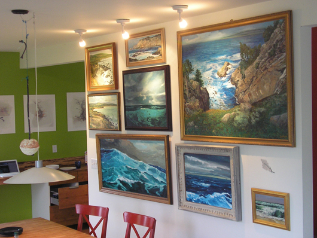

Documenting: NEPO 3: Air, Water, Fire (We Will Leave the Earth Behind)
I won't use many words this time. I will let the pictures speak. It was a great event - thanks to all that participated and made it so!
This is the closest that I've been to the place of universal creation. Photo by Dan Bennett

Lara Davis and Lauren Atkinson, accompanied by My Flying Dream comic book by David Lasky, photos by Lara Davis
Our bedroom (and our bed) was moved to the entry room for this great calming experience.



live from Taipei by Janel Twoggod
visit her blog at http://hechochina.blogspot.com/
see part 2 and 3 below
Accompanied by Barb Antonio on cello and Noah Dassel on piano.
Video by Rumi Koshino
During this amazing momentous performance an installation created by Rumi Koshino--titled "Full of Air"
and consisting of walls build from paper cinder blocks--came down, was thrown around and finally crushed,
becoming "Rubble Full of Air".
Video by Rumi Koshino
About creating NEPO 3:
As you may know by now, the original idea for the show was to explore three elements of air, water, fire. In order to stick with number 3 we decided to leave the Earth behind.
Well, interestingly enough! - the show did not turn out as cosmic and out there as I originally thought. Somewhere throughout the process of organizing and creating work for NEPO 3 I noticed that the more we try to leave the Earth behind the more it comes back - in our conversations, in the various works and ideas. It seemed like a paradox, but I realized that in the end the overall focus of this show is the Earth.
This revelation ceases to be so paradoxical and strange when you consider the difficult (if not impossible) task of exploring elements of air, water, fire without our Earthly environment. For me this is the most interesting thing I have learned from working on this show - that sometimes by leaving something behind we actually find it.
______________________________________________________________To read more about NEPO 3 and see more awesome photos visit:
Amanda Manitach blog
Dan Bennett's "Soggydan's" flickr page
translinguistic other
... here are some other places you can read and learn about NEPO:
Big art weekend on Slog
best of
Beacon Hill Blog
SATURDAY - June 5, 6 - 12 pm
NEPO 3: Air, Water, Fire (We Will Leave the Earth Behind)
List of participating artists:
Lauren Atkinson, Lara Davis, David Lasky, Aaliyah Gupta, Lauren Klenow, Julia Haack, Mark Callen, Stefan Knorr, Serrah Russell, Gitane Versakos, Jason Hirata, Matt Hilger, Timothy Cross, Rumi Koshino, Klara Glosova, Emily Pothast, David Golightly, SP Weather Station (Natalie Campbell and Heidi Nielson), Eric Ostrowski, Janel Twogood, Matt Baker, Sebastian Shaw, Christopher McElroy, Whiting Tennis.
This time around we are featuring several exciting collaborative projects:
Flying in Dreams - audio/visual project by Lara Davis, Lauren Atkinson and David Lasky
Drone Chamber - by Emily Pothast and David Golightly
Cloud Talk - Skype performance by SP Weather Station artists Natalie Campbell and Heidi Nielson
Something exciting (I am sure) - by Jason Hirata and Matt Hilger
Trash-Walk - by Rumi Koshino and (yours trully) Klara Glosova
On the solo ethereal wavelength we have projection installation by Lauren Klenow, installation by Stefan Knorr, and multi-projector performance by Eric Ostrowski. Falling into a (relatively speaking) more solid category are visual works by Mark Callen, Gitane Versakos, Aaliyah Gupta, Serrah Russell, Julia Haack and Timothy Cross.
Brand new addition to the show is Hecho en China (by Janel Twogood as our live visual interactive correspondent in China) - prepare to navigate through a remote-control tour of another reality.
We are also very pleased to announce special musical guest Whiting Tennis.
As a night cap (yes! - two times, please) a fire juggling performance by Matt Baker and Sebastian Shaw.
NEPO 3 performance and project schedule:
| 6:00 pm | doors OPEN (NEPO) 3 | 6:00 pm on | works that run and/or are visible throughout the whole evening: Flying in Dreams by Lara Davis, Lauren Atkinson and David Lasky Drone Chamber by Emily Pothast and David Golightly Hecho en China by Janel Twogood Culmulus by Lauren Klenow Wood River by Christopher Mc Elroy Full of Air and Wave by Rumi Koshino Trash-Walk and Current Loop: A Woman Risen from the Sea by Klara Glosova Sea Wall by Mark Callen Puddle by Julia Haack Eruption drawings by Aaliyah Gupta Dress as a fallen rain cloud by Serrah Rusell Match and Stick drawings by Timothy Cross Sunset by Gitane Versakos The Missing Element by Stefan Knorr |
8:30 pm | I want you to want me: experiments in synergy by Jason Hirata and Matt Hilger (hint: this project involves a cell phone launch to outer space - don't miss it!) | 9:00 pm | Cloud Talk - Skype performance by SP Weather Station (Natalie Campbell and Heidi Nielson) | 9:30 pm | Multi-projector star performance by Eric Ostrowski | 10:00 pm | Musical guest Whiting Tennis | 11:00 pm | Fire juggling by Matt Baker, Sebastian Shaw | 12:00 pm | Lights out (NEPO over) |
That's it. See you at NEPO 3!
As always, warm greetings from NEPO team,
Klara (high-maintenance) and Scott (maintenance)